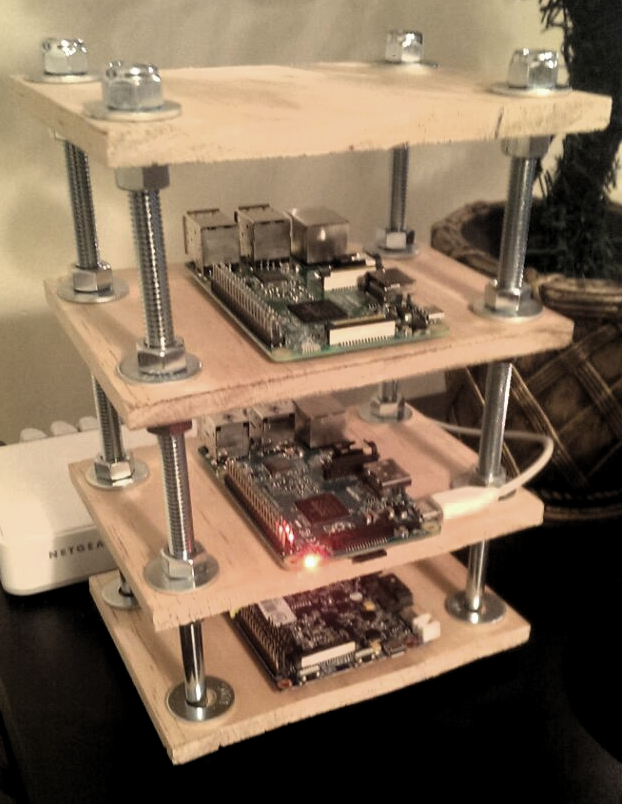

Setting Up My Pi Cluster
I have a Raspberry Pi 2, a Raspberry Pi 3, and a Banana Pi. A while ago, I constructed a small tower to house my pi devices. Since then, I have additionally acquired a power source, and some CAT6 cable to connect them all up to a switch. I hope to use the Pis as a mini clustered environment, where I can learn (and play) with some of the "Devops" technologies/techniques out there. This post will briefly explain the initial setup of my cluster.
Setting up the OS Images
Before doing anything with the hardware, I had to setup the pi "hard drives" (micro SD cards), so they could boot.Ubuntu for Raspberry PI

After mucking around with Rapsbian and Hypriot one Sunday, I decided to just go with a plain Ubuntu image for the Raspberry Pis. I don't have anything against these specific OSes, but I am mostly setting up this cluster to simulate what I would do on a "real" system. For me, that often means using a straight OS like Ubuntu.
Luckily, Canonical makes special Ubuntu ARM images, specifically for the Raspberry Pi. I download the 16.04 server version for both the raspberry pi 2 and raspberry pi 3. The process to write these images to the microSD card differs slightly from ones I've used in the past. It still uses dd, but the image is first piped through xzcat, as such:
xzcat ubuntu-16.04.2-preinstalled-server-armhf+raspi2.img.xz | sudo dd bs=4M of=/dev/mmcblk0
xzcat ubuntu-16.04-preinstalled-server-armhf+raspi3.img.xz | sudo dd bs=4M of=/dev/mmcblk0
Armbian
The one issue that I have with the Banana Pi compared to the Raspberry Pi, is that it is commonly not supported. It can be hard to find a bananna pi specific image, and the raspberry pi ones usually do not work. For example, while Canonical linked to Raspberry Pi images, it did not mention the banana pie. This is where Armbian comes in.
Armbian is a lightweight Debian and Ubuntu based distribution, that provides builds for various ARM devices. Thus the name, ARM-bian. One of these many supported devices... is the banana pi. I downloaded the Ubuntu 16.04 Server flavor of Armbian for the Banana PI, and copied it to my micro SD card with the command:
sudo dd if=Armbian_5.25_Bananapi_Ubuntu_xenial_next_4.9.7.img of=/dev/mmcblk0 bs=1M
Hardware Setup

After the operating system images have been copied the SD cards, the hardware can be setup. I started by inserting the microSD cards into the PIs, being careful to use the correct card with each device. Unlike the Raspberry PIs, the Bananna PI uses a normal SD card instead of a microSD, so I just left it in the converter card I used to connect it to my computer when imaging.
After adding the "hard drives", I connected each PI to my network switch, via Ethernet. In the future, I would like to put the cluster on it's own mini (managed?) switch so that I can have the nodes on their own private network, but connected to my main network. For now, this works.
Lastly, plug in the power connectors. Pi devices can be very finicky when not properly powered, so it is a good idea to use an capable USB charging device. I have had trouble in the past with my devices not working correctly due to insufficient power (especially the bpi). I knew this problem would be an even more pronounced with the cluster because I planned to connect a HD to the bpi with a SATA connector. So, I picked up an Anker Power Port 5 and it has been working great.
Lastly, two nice features of the banana pi is that it has a 1 GB ethernet port, and a SATA connector with power. So, to utilize this functionality, and get the most out of the bpi, I ordered the appropriate SATA connector from amazon for a few bucks. When it arrived, I connected it to the SATA and SATA power ports on the pi, and then to an old 300GB laptop HD I had laying around (it was the drive that came with kadabra). After the drive was connected, running lsblk on the bpi automatically showed a /dev/sda device, in addition to the typical mmcblk0 microSD device. I mounted the drive to a folder using the following command to test it out:
sudo mount /dev/sda1 Data
With the hard drive mounted, I was able to browse its contents and see of all the crap still on it. The combination of the GB network and large HD makes the bpi a great little storage node, which is how I intend to use it.
Bootup and Connecting via SSH
When the Pis are plugged in, they should automatically boot up. In order to connect to them, I found their IPs from my main computer using nmap:
sudo nmap -sP 192.168.1.0/24
The Raspberry PIs have (Raspberry Pi Foundation) in the MAC address lines, and my Banana Pi had bananapi in the host name. Once I had the IP addresses, I could ssh in using the default usernames and passwords for the images (the user/pass should be listed on the sites). After logging in for the first time, each PI prompted me to change the password (as it should).
Adding A Sudo User
When connecting to remote devices, I don't like to be logged in as root, so the first thing I did was setup my user account with sudo privileges, on the two Raspberry Pis (Armbian actually prompted me through these steps the first time I logged into the Banana pi. Kudos to them).
To add the user, set it's password (important), and then add it to the sudo group, I used the following commands:
useradd -m -s /bin/bash ryan
passwd ryan
usermod -a -G sudo ryan
useradd command, but I prefer to do it with usermod. Personal Preference.That's it. At this point, all of my the PIs are minimally set up accessible. The next steps include updating packages, setting up ssh keys, and configuring .... Ansible. But that will all be in the next post. See you then!